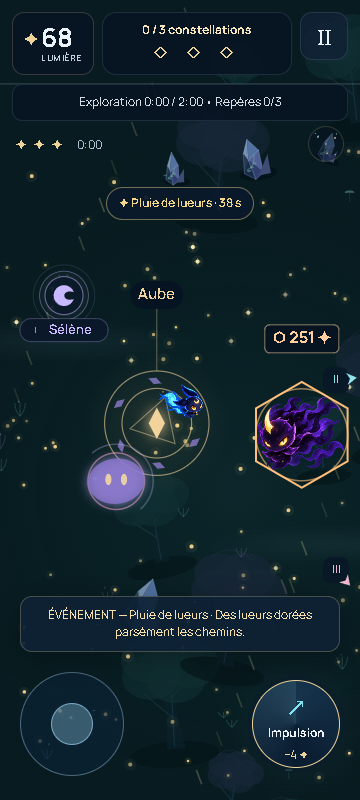
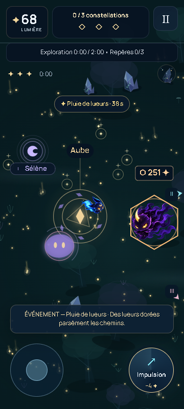
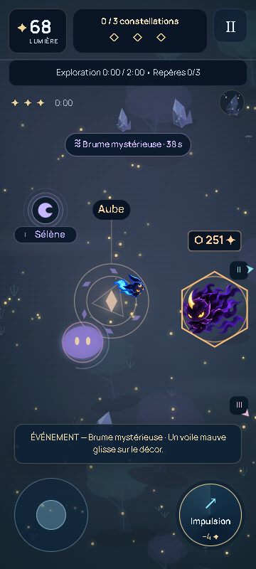
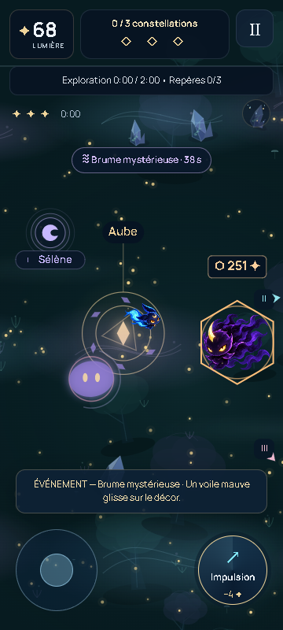
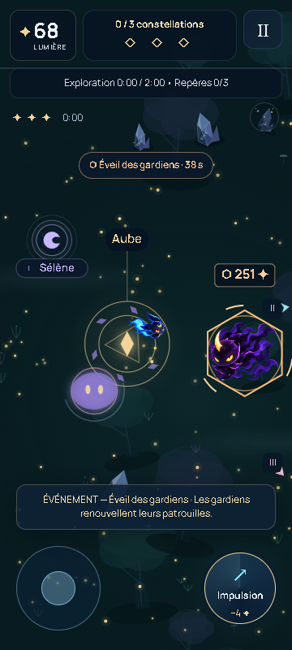
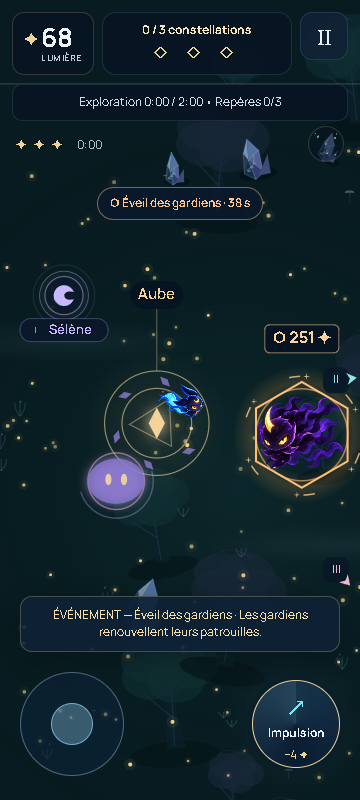

Quatre événements, quatre atmosphères
Captures du vrai jeu sur Android simulé 360 × 800. Mêmes graines, positions, arène et instant de l'événement. Aucun visuel conceptuel. La validation sur téléphone physique reste à faire.
Pluie de lueurs
Avant
Après
Brume mystérieuse
Avant
Après
Éveil des gardiens
Avant
Après
Courant astral — rendu conservé
Autres formats
Brume sur PC · Pluie en paysage · Gardiens en paysage